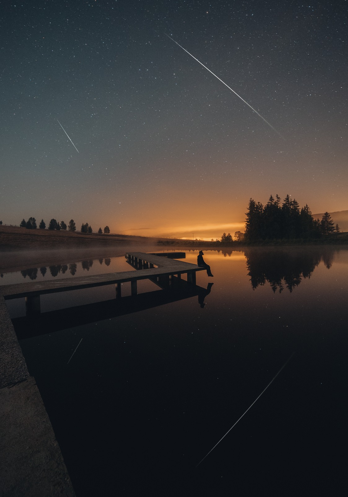
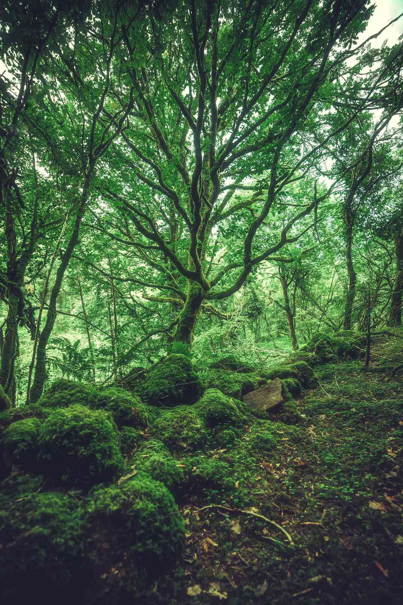

Witaj Wędrowcze!
Wilczyce to beskidzka wieś z malowniczymi widokami. Położona w otoczeniu gór i lasów i krystalicznie czystego jeziora, wyróżnia się czystym powietrzem i wyjątkowym mikroklimatem. Zapraszamy do wypoczynku w tym wyjątkowym miejscu!
Nasza oferta
Zapraszamy Cię w skromne progi naszej Wilczej Chaty. Tutaj poczujesz się jak w domu. W naszej ofercie znajdziesz komfortowo wyposażone drewniane domki z łazienką. Do Twojej dyspozycji jest także ruska bania i sauna fińska. Wokół roztacza się wspaniały świerkowy las, zapraszający do spacerów. Tuż obok naszej Chaty znajdziesz kilka szlaków turystycznych prowadzących na piękne widokowe szczyty. Zimą możesz wybrać się na wyprawę psim zaprzęgiem lub skorzystać z tras narciarstwa biegowego. W naszej kuchni przygotujemy dla Ciebie pożywne śniadania i przepyszne obiadokolacje, a Ty rozkoszuj się odpoczynkiem wśród natury.
Cennik
Domek Leśny Wilk
Miejsc noclegowych: 6
Cena za dobę od: 240 zł
Domek Wilczy Duch
Miejsc noclegowych: 4
Cena za dobę od: 200 zł
Domek Wilczy Jar
Miejsc noclegowych: 5
Cena za dobę od: 250 zł
Domek Leśna Ostoja
Miejsc noclegowych: 2
Cena za dobę od: 150 zł
Galeria


Atrakcje:
- Sauna fińska
- Ruska bania
- Krystalicznie czyste jezioro
- Wypożyczalnia łódek, kajaków i rowerów
- Świerkowy las
- Przepiękne widoki
- Trasy narciarstwa biegowego
- Szlaki turystyczne piesze i rowerowe
- Wyprawy psimi zaprzęgami
- Wycieczki przyrodnicze z przewodnikiem